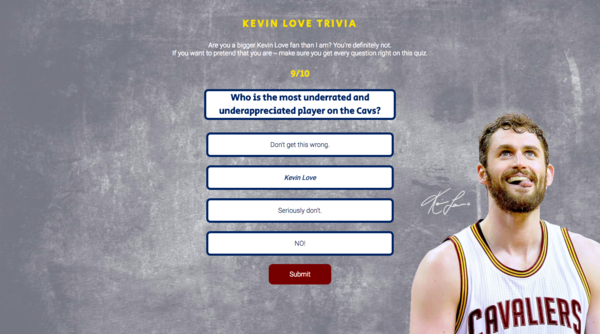
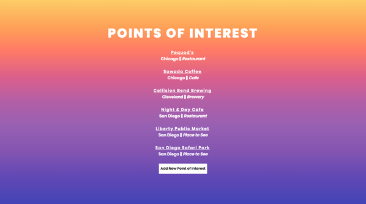
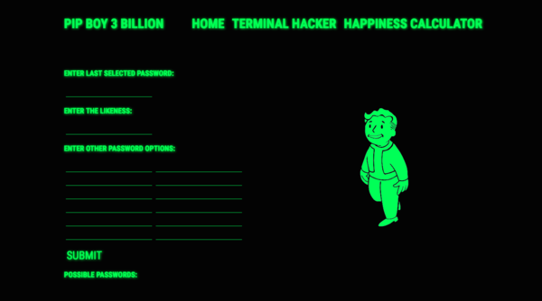

Made with HTML, CSS and Javascript
A simple trivia game all about my favorite Cavs player (who is not playing very well right now but he's trying his best and that's all that counts in my book).
Made with MongoDB, Handlebars, Node, Express, CSS and Javascript
A travel planning app that allows the user to create, add, edit and delete points of interest in cities they want to visit.
Made with React, CSS
A frontend application to assist those who play Fallout 4 with hacking in-game terminals and tracking the happiness level of settlements they control.